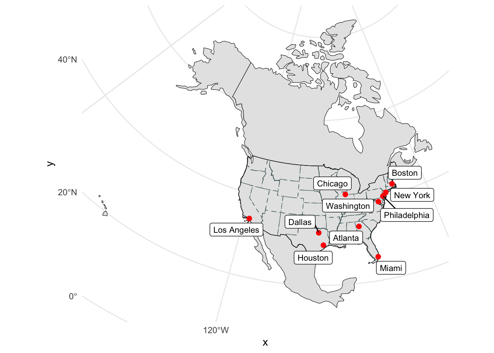
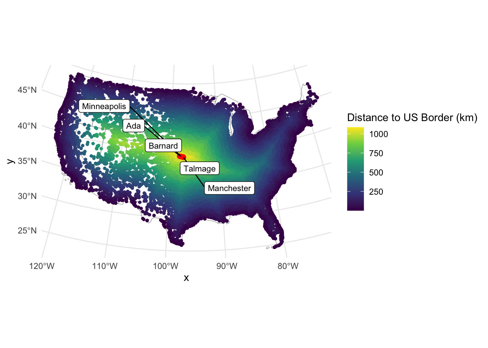
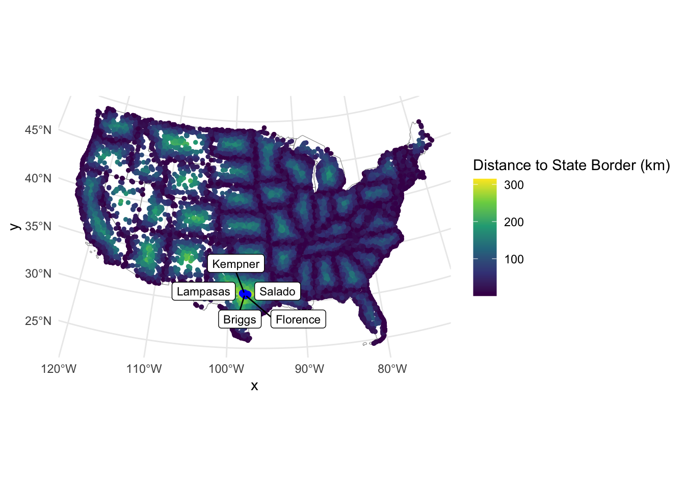
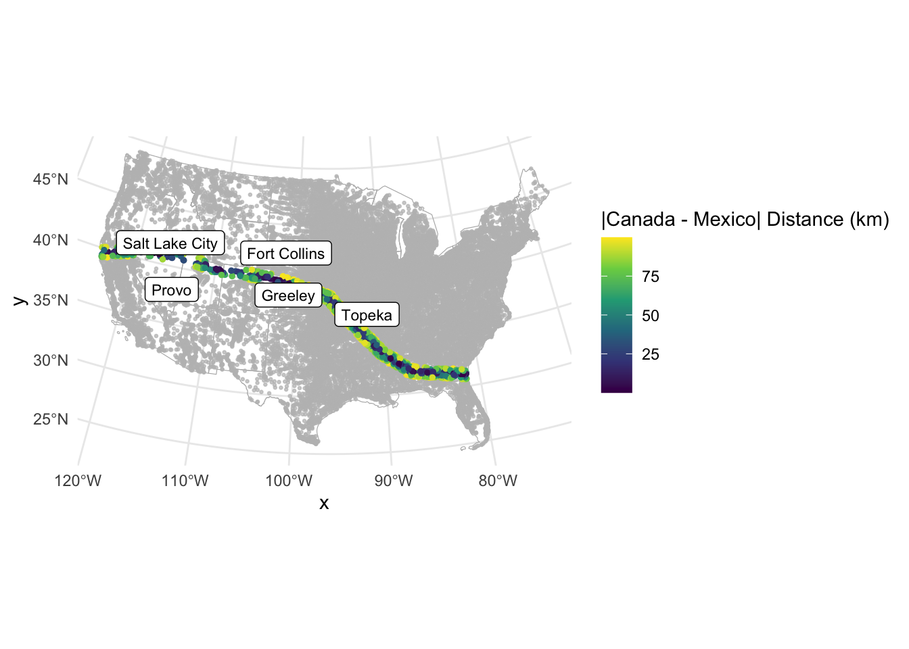
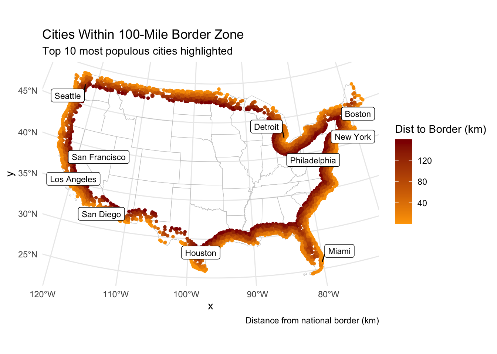

This PROJ.4 string defines an Equidistant Conic projection with the following parameters:
+proj=eqdc → Equidistant Conic projection
+lat_0=40 → Latitude of the projection’s center (40°N)
+lon_0=-96 → Central meridian (96°W)
+lat_1=20 → First standard parallel (20°N)
+lat_2=60 → Second standard parallel (60°N)
+x_0=0 → False easting (0 meters)
+y_0=0 → False northing (0 meters)
+datum=NAD83 → Uses the North American Datum 1983 (NAD83)
+units=m → Units are in meters
+no_defs → No additional default parameters from PROJ’s database
This projection is commonly used for mapping large areas with an east-west extent, especially in North America, as it balances distortion well between the two standard parallels.
1.2- Get USA state boundaries
In R, USA boundaries are stored in the AOI package. In case this package and data are not installed:
The downloaded binary packages are in
/var/folders/95/7bppnrhs19z4vp_sdb0lv9zr0000gn/T//RtmpZow7xy/downloaded_packages
── R CMD build ─────────────────────────────────────────────────────────────────
* checking for file ‘/private/var/folders/95/7bppnrhs19z4vp_sdb0lv9zr0000gn/T/RtmpZow7xy/remotes154cd6a9058a/mikejohnson51-AOI-f821d49/DESCRIPTION’ ... OK
* preparing ‘AOI’:
* checking DESCRIPTION meta-information ... OK
* checking for LF line-endings in source and make files and shell scripts
* checking for empty or unneeded directories
* building ‘AOI_0.3.0.tar.gz’
US_boundaries<-data.frame(boundaries_data)
remotes::install_github("ropensci/USAboundaries")
Using GitHub PAT from the git credential store.
Skipping install of 'USAboundaries' from a github remote, the SHA1 (0f56f492) has not changed since last install.
Use `force = TRUE` to force installation
Skipping install of 'USAboundariesData' from a github remote, the SHA1 (064cdbcb) has not changed since last install.
Use `force = TRUE` to force installation
states <-aoi_get(state ="conus")states_proj <-st_transform(states, crs = eqdc)
1.3- Get country boundaries for Mexico, the United States of America, and Canada
In R, country boundaries are stored in the AOI package.
Country boundaries can be accessed with aoi_get(country = c("MX", "CA", "USA")).
Make sure the data is in a projected coordinate system suitable for distance measurements at the national scale (eqdc).
The process of finding, downloading and accessing data is the first step of every analysis. Here we will go through these steps (minus finding the data).
While this data has everything we want, it is not yet spatial. Convert the data.frame to a spatial object using st_as_sf and prescribing the coordinate variables and CRS (Hint what projection are the raw coordinates in?)
Finally, remove cities in states not wanted and make sure the data is in a projected coordinate system suitable for distance measurements at the national scale:
Congratulations! You now have three real-world, large datasets ready for analysis.
library(here)
here() starts at /Users/eleanor/Library/Mobile Documents/com~apple~CloudDocs/Documents/Documents - Eleanor MacBook Pro/ESS330-Quantitative-Reasoning/github/Lab-10
── Column specification ────────────────────────────────────────────────────────
Delimiter: ","
chr (9): city, city_ascii, state_id, state_name, county_fips, county_name, s...
dbl (6): lat, lng, population, density, ranking, id
lgl (2): military, incorporated
ℹ Use `spec()` to retrieve the full column specification for this data.
ℹ Specify the column types or set `show_col_types = FALSE` to quiet this message.
Here we will focus on calculating the distance of each USA city to (1) the national border (2) the nearest state border (3) the Mexican border and (4) the Canadian border. You will need to manipulate you existing spatial geometries to do this using either st_union or st_combine depending on the situation. In all cases, since we are after distances to borders, we will need to cast (st_cast) our MULTIPPOLYGON geometries to MULTILINESTRING geometries. To perform these distance calculations we will use st_distance().
2.1 - Distance to USA Border (coastline or national) (km)
For 2.2 we are interested in calculating the distance of each USA city to the USA border (coastline or national border). To do this we need all states to act as single unit. Convert the USA state boundaries to a MULTILINESTRING geometry in which the state boundaries are resolved. Please do this starting with the states object and NOT with a filtered country object. In addition to storing this distance data as part of the cities data.frame, produce a table (flextable) documenting the five cities farthest from a state border. Include only the city name, state, and distance.
For 2.1 we are interested in calculating the distance of each city to the nearest state boundary. To do this we need all states to act as single unit. Convert the USA state boundaries to a MULTILINESTRING geometry in which the state boundaries are preserved (not resolved). In addition to storing this distance data as part of the cities data.frame, produce a table (flextable) documenting the five cities farthest from a state border. Include only the city name, state, and distance.
For 2.3 we are interested in calculating the distance of each city to the Mexican border. To do this we need to isolate Mexico from the country objects. In addition to storing this data as part of the cities data.frame, produce a table (flextable) documenting the five cities farthest from a state border. Include only the city name, state, and distance.
For 2.4 we are interested in calculating the distance of each city to the Canadian border. To do this we need to isolate Canada from the country objects. In addition to storing this data as part of the cities data.frame, produce a table (flextable) documenting the five cities farthest from a state border. Include only the city name, state, and distance.
In this section we will focus on visualizing the distance data you calculated above. You will be using ggplot to make your maps, ggrepl to label significant features, and gghighlight to emphasize important criteria.
3.1 Data
Show the 3 countries, CONUS outline, state boundaries, and 10 largest USA cities (by population) on a single map
Use geom_sf to plot your layers Use lty to change the line type and size to change line width Use ggrepel::geom_label_repel to label your cities
# Top 10 most populous citiestop10_cities <- cities_filtered %>%arrange(desc(population)) %>%slice_head(n =10)ggplot() +geom_sf(data = countries_proj, fill ="grey90", color ="black", lty =1) +geom_sf(data = states_proj, fill =NA, color ="darkslategray", lty =2, size =0.5) +geom_sf(data =st_union(states_proj), fill =NA, color ="black", size =0.7) +geom_sf(data = top10_cities, color ="red", size =2) + ggrepel::geom_label_repel(data = top10_cities,aes(geometry = geometry, label = city),stat ="sf_coordinates",size =3 ) +theme_minimal()

3.2 City Distance from the Border
Create a map that colors USA cities by their distance from the national border. In addition, re-draw and label the 5 cities that are farthest from the border.
top5_us_border <- cities_filtered %>%arrange(desc(dist_us_border_km)) %>%slice_head(n =5)ggplot() +geom_sf(data = states_proj, fill =NA, color ="grey60") +geom_sf(data = cities_filtered, aes(color = dist_us_border_km), size =1) +scale_color_viridis_c(name ="Distance to US Border (km)") +geom_sf(data = top5_us_border, color ="red", size =2) + ggrepel::geom_label_repel(data = top5_us_border,aes(geometry = geometry, label = city),stat ="sf_coordinates",size =3 ) +theme_minimal()

3.3 City Distance from Nearest State
Create a map that colors USA cities by their distance from the nearest state border. In addition, re-draw and label the 5 cities that are farthest from any border.
top5_state_border <- cities_filtered %>%arrange(desc(dist_state_border_km)) %>%slice_head(n =5)ggplot() +geom_sf(data = states_proj, fill =NA, color ="grey60") +geom_sf(data = cities_filtered, aes(color = dist_state_border_km), size =1) +scale_color_viridis_c(name ="Distance to State Border (km)") +geom_sf(data = top5_state_border, color ="blue", size =2) + ggrepel::geom_label_repel(data = top5_state_border,aes(geometry = geometry, label = city),stat ="sf_coordinates",size =3 ) +theme_minimal()

3.4 Equidistance boundary from Mexico and Canada
Here we provide a little more challenge. Use gghighlight to identify the cities that are equal distance from the Canadian AND Mexican border 100 km.
In addition, label the five (5) most populous cites in this zone.
Hint: (create a new variable that finds the absolute difference between the distance to Mexico and the distance to Canada)
# Create absolute difference columncities_filtered <- cities_filtered %>%mutate(abs_diff_can_mex =abs(dist_mexico_km - dist_canada_km))# Filter cities within ±100 km of equidistanceequidistant_cities <- cities_filtered %>%filter(abs_diff_can_mex <=100)# Get 5 most populous equidistant citiestop5_eqdist <- equidistant_cities %>%arrange(desc(population)) %>%slice_head(n =5)ggplot() +geom_sf(data = states_proj, fill =NA, color ="grey70") +geom_sf(data = cities_filtered, color ="lightgrey", size =0.5) +geom_sf(data = equidistant_cities, aes(color = abs_diff_can_mex), size =1) +scale_color_viridis_c(name ="|Canada - Mexico| Distance (km)") +gghighlight(abs_diff_can_mex <=100, use_direct_label =FALSE) + ggrepel::geom_label_repel(data = top5_eqdist,aes(geometry = geometry, label = city),stat ="sf_coordinates",size =3 ) +theme_minimal()
Warning: Could not calculate the predicate for layer 1; ignored

Question 4:
Real World Application Recently, Federal Agencies have claimed basic constitutional rights protected by the Fourth Amendment (protecting Americans from random and arbitrary stops and searches) do not apply fully at our borders (see Portland). For example, federal authorities do not need a warrant or suspicion of wrongdoing to justify conducting what courts have called a “routine search,” such as searching luggage or a vehicle. Specifically, federal regulations give U.S. Customs and Border Protection (CBP) authority to operate within 100 miles of any U.S. “external boundary”. Further information can be found at this ACLU article.
4.1 Quantifing Border Zone
How many cities are in this 100 mile zone? (100 miles ~ 160 kilometers) How many people live in a city within 100 miles of the border? What percentage of the total population is in this zone? Does it match the ACLU estimate in the link above? Report this information as a table.
cities_in_border_zone <- cities_filtered %>%filter(dist_us_border_km <=160)num_cities_in_border_zone <-nrow(cities_in_border_zone)total_population_border_zone <-sum(cities_in_border_zone$population)total_population_all_cities <-sum(cities_filtered$population)percent_population_in_border_zone <- (total_population_border_zone / total_population_all_cities) *100border_zone_table <-data.frame("Number of Cities in Zone"= num_cities_in_border_zone,"Total")border_zone_table
Number.of.Cities.in.Zone X.Total.
1 9813 Total
4.2 Mapping Border Zone
Make a map highlighting the cites within the 100 mile zone using gghighlight. Use a color gradient from ‘orange’ to ‘darkred’. Label the 10 most populous cities in the Danger Zone
top10_border_zone <- cities_in_border_zone %>%arrange(desc(population)) %>%slice_head(n =10)ggplot() +geom_sf(data = states_proj, fill =NA, color ="gray80", size =0.4) +geom_sf(data = cities_in_border_zone, aes(color = dist_us_border_km), size =1) +scale_color_gradient(low ="orange", high ="darkred", name ="Dist to Border (km)") + ggrepel::geom_label_repel(data = top10_border_zone,aes(geometry = geometry, label = city),stat ="sf_coordinates",size =3,box.padding =0.3,max.overlaps =Inf ) +labs(title ="Cities Within 100-Mile Border Zone",subtitle ="Top 10 most populous cities highlighted",caption ="Distance from national border (km)") +theme_minimal()

4.3 : Instead of labeling the 10 most populous cites, label the most populous city in each state within the Danger Zone.
most_populous_per_state <- cities_in_border_zone %>%group_by(state_id) %>%slice_max(order_by = population, n =1, with_ties =FALSE) %>%ungroup()ggplot() +geom_sf(data = states_proj, fill =NA, color ="gray70", size =0.4) +geom_sf(data = cities_in_border_zone, aes(color = dist_us_border_km), size =1) +scale_color_gradient(low ="orange", high ="darkred", name ="Dist to Border (km)") + ggrepel::geom_label_repel(data = most_populous_per_state,aes(geometry = geometry, label = city),stat ="sf_coordinates",size =3,box.padding =0.3,max.overlaps =Inf ) +labs(title ="Most Populous City per State Within 100-Mile Border Zone",caption ="Cities colored by distance to border (km)") +theme_minimal()